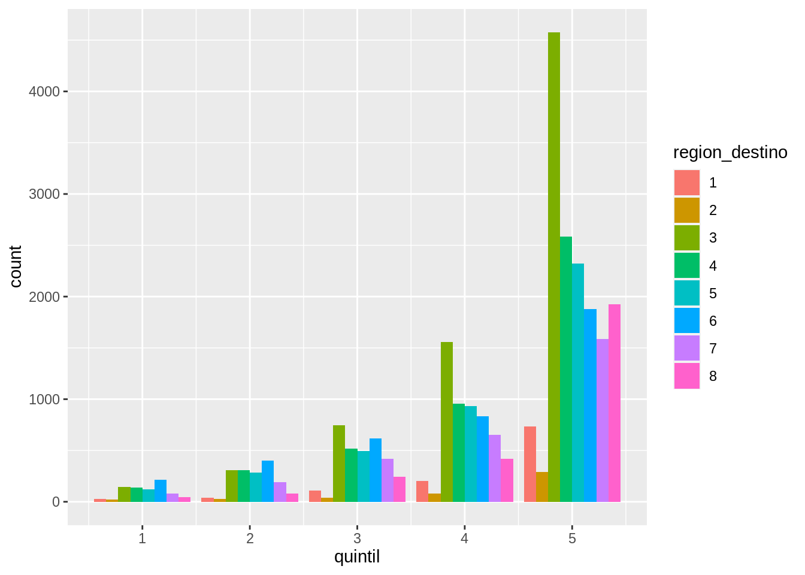
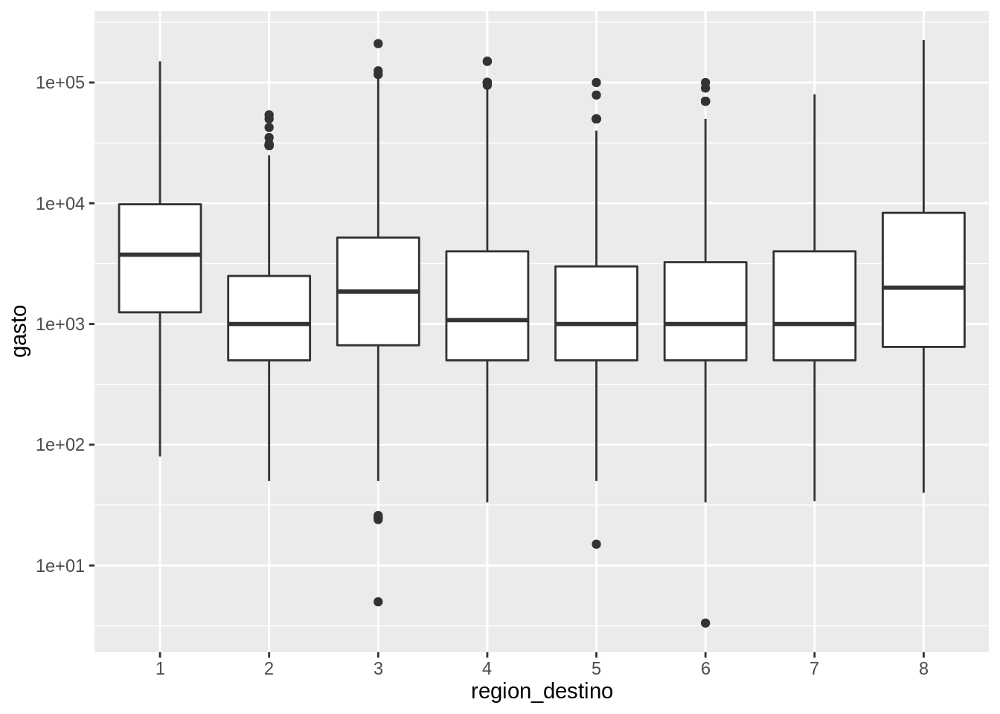

6.10 Graficando en múltiples paneles
Vimos que es posible graficar más de dos variables en un gráfico mapeando una variable al color o por ejemplo el tipo de línea o linetype

En este caso no solo visualizamos la relación entre el precio y el quilate del diamante, también podemos ver que rol juega el color. También podríamos haber intentando resolver el problema generando un gráfico por cada color filtrando las observaciones correspondientes.
diamantes %>%
filter(color == "D") %>%
ggplot(aes(quilate, precio)) +
geom_point(aes(color = color))
Pero sería muchísimo trabajo si tenemos que hacer esto para cada una de las 7 categorías de color. La buena noticia es que {ggplot2} tiene un par de funciones justo para resolver este problema:

=======6.10 Graficando en múltiples paneles
Vimos que es posible graficar más de dos variables en un gráfico mapeando una variable al color o por ejemplo el tipo de línea o linetype
ggplot(diamantes, aes(quilate, precio)) +
geom_point(aes(color = color))En este caso no solo visualizamos la relación entre el precio y el quilate del diamante, también podemos ver que rol juega el color. También podríamos haber intentando resolver el problema generando un gráfico por cada color filtrando las observaciones correspondientes.
diamantes %>%
filter(color == "D") %>%
ggplot(aes(quilate, precio)) +
geom_point(aes(color = color))Pero sería muchísimo trabajo si tenemos que hacer esto para cada una de las 7 categorías de color. La buena noticia es que {ggplot2} tiene un par de funciones justo para resolver este problema:
ggplot(diamantes, aes(quilate, precio)) +
geom_point(aes(color = color)) +
facet_wrap(~color)
Esta nueva capa con facet_wrap() divide al gráfico inicial en 7 paneles o facets, uno por cada color.
Esta función requiere saber que variable será la responsable de separar los paneles y para eso se usa la notación de fórmula de R: ~color.
Esto se lee como generar paneles “en función del color”.
¿Y si quisiéramos generar paneles a partir de 2 variables?
Para eso existe facet_grid().
En este gráfico generamos paneles viendo la “relación entre el corte y el color” y por ejemplo en el primer panel arriba a la izquierda podremos observar los diamantes que son al mismo tiempo de color D y corte Regular.
En este caso mapear la variable color al color de los diamantes no parece ser necesario ya que cada columna ya nos permite identificar eso, sin embargo en algunos casos ayuda a leer el gráfico más rápido.
Tercer desafío
Generá boxplots para analizar como se comporta el precio según la claridad para cada tipo de corte como se ve acá.
ggplot(diamantes, aes(quilate, precio)) +
geom_point(aes(color = color)) +
facet_grid(corte~color)
Tercer desafío
Generá boxplots para analizar como se comporta el precio según la claridad para cada tipo de corte como se ve acá.
6.9 Graficando en múltiples paneles
En un gráfico anterior mostramos la cantidad de hogares en cada quintil en función de la región de destino mapeando la variable region_destino al relleno de las columnas:
ggplot(gastos) +
geom_bar(aes(quintil, y = stat(prop), fill = region_destino), position = "dodge")
Este gráfico permite comparar diferencias entre regiones para un mismo quintil, pero no permite comparar muy bien la distribución de ingresos en función de la región de destino.
Este problema podría resolverse generando un gráfico por cada región filtrando las observaciones correspondientes.
gastos %>%
filter(region_destino == 1) %>%
ggplot() +
geom_bar(aes(quintil, y = stat(prop)), position = "dodge")
Pero sería muchísimo trabajo si tenés que hacer esto para cada una de las 8 regiones. Excepto que ggplot2 tiene una forma de automatizar eso utilizando paneles:
ggplot(gastos) +
geom_bar(aes(quintil, y = stat(prop)), position = "dodge") +
facet_wrap(~ region_destino)
Esta nueva capa con facet_wrap() divide al gráfico inicial en 8 paneles o facets, uno por cada región.
Esta función requiere saber que variable será la responsable de separar los paneles y para eso se usa la notación de fórmula de R: ~ region_destino.
Esto se lee como generar paneles en función de region_destino.
Una hipótesis razonable podría ser que la distribución de ingresos en cada región también varía según el trimestre. Para ver esto, habría que hacer el gráfico de barras para cada combinación de región de destino y trimestre. En ggplot2 esto se resuelve agregando más variables que definan los paneles “sumando” variables en la fórmula
ggplot(gastos) +
geom_bar(aes(quintil, y = stat(prop)), position = "dodge") +
facet_wrap(~ region_destino + trimestre)
Esto se lee como generar paneles *“en función de* region_destino y trimestre”.
Una alternativa que funciona mejor cuando se hacen paneles en función de dos o más variables es que en vez de organizar los paneles uno luego del otro, tengan una organización.
Por ejemplo, que los paneles se organicen en filas según la región de destino y en columna según el trimestre.
Para eso hay que reemplazar facet_wrap() por facet_grid() y cambiar la formula un poco.
ggplot(gastos) +
geom_bar(aes(quintil, y = stat(prop)), position = "dodge") +
facet_grid(region_destino ~ trimestre)
¿Ves como quedan los paneles más organizados y fácil es de leer? Esta organización permite comparar regiones para un trimestre en particular comparando gráficos en la vertical, y comparar trimestres para una misma región leyendo los gráficos en horizontal.
La formula region_destino ~ trimestre indica que region_destino define las filas y trimestre define las columnas.
Tercer desafío
Generá boxplots para analizar como se comporta el gasto de cada familia en función del quintil al que pertenecen para cada región.
## Warning: Transformation introduced infinite values in continuous y-axis## Warning: Continuous x aesthetic -- did you forget aes(group=...)?## Warning: Removed 853 rows containing non-finite values (stat_boxplot).